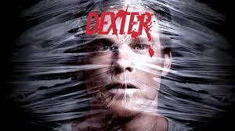
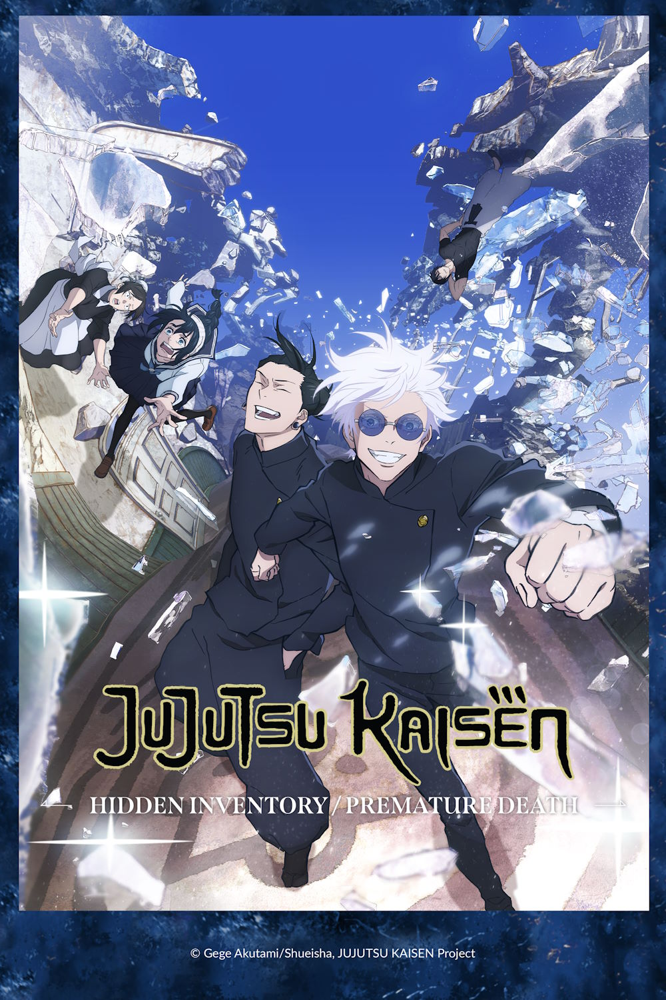

TRUE DETECTIVE

Construida en una narración no lineal, la temporada se centra en los detectives de homicidio de la Policía Estatal de Luisiana Rustin "Rust" Cohle (McConaughey) y Martin "Marty" Hart (Harrelson), quienes investigan el asesinato de Dora Lange en 1995
TRAILER
DEXTER
Dexter Morgan es un joven extremadamente agradable experto en análisis sanguíneos que trabaja para el departamento de policía de Miami. Sin embargo, tras este aspecto amable y simpático, se esconde un pasajero oscuro. Una fuerza interior le empuja hacia el asesinato y la muerte.
TRAILER
JUJUTSU KAISEN
La historia gira en torno al estudiante Yūji Itadori, quien se une a una organización secreta de hechiceros para matar a una poderosa maldición llamada Ryomen Sukuna tras convertirse en su anfitrión.
TRAILER
Y te recomiendo esta plaza que es famosa por su temática en anime. 👌💕